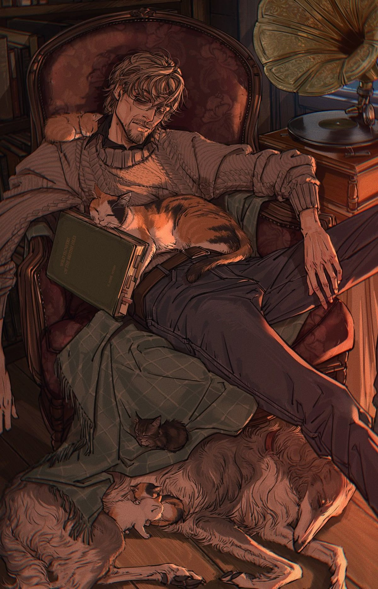

Vincent était un homme discret. Il ne faisait pas de bruit, tout comme il ne s’encombrait que de peu de gestes. Lorsqu’il lui fallait pourtant se mouvoir, quelque chose dans sa démarche donnait l’impression qu’un poids invisible pesait sur ses épaules, s’accrochait à son dos, son corps paraissait souffrir chaque fois que Vincent exigeait de lui le moindre effort. Et pourtant, son visage n’en témoignait jamais rien. Du plus infime au plus évident de ses muscles, tout semblait prisonnier d’une paralysie constante, comme si ses membres n’étaient plus mus par sa propre volonté, mais guidés, tirés par les fils d’une main étrangère. De volonté, peut-être n’en avait-il simplement plus. Si ce n’était celle de continuer à exister ainsi, sans davantage de raison que de choix.
Ses lèvres ne songeaient jamais à sourire, tout comme elles ne songeaient qu’à peine à parler. L’entièreté de son visage semblait avoir oublié comment témoigner d’une émotion, sûrement parce que Vincent lui-même en avait perdu jusqu’aux notions. Il n’avait jamais véritablement su les mimer, pas davantage qu’il n’avait su les ressentir. Non pas qu’il en fût foncièrement incapable. Quelque chose s’était seulement bâti entre lui et le reste du monde. Un mur de béton, immense, épais, infranchissable, derrière lequel Vincent s’était égaré depuis si longtemps que, même plongé au milieu d’une foule, il n’aurait probablement plus su dire de quel côté il se trouvait.
Il ne connaissait guère le tact, tout comme il ignorait les bonnes manières. La vérité, le mensonge, la vengeance, les remords, les regrets… Tout cela n’était qu’un amas de concepts étrangers dont il connaissait peut-être les définitions sans jamais en comprendre véritablement le sens. Des mots inventés par d’autres pour nommer des choses qui, en lui, ne portaient aucun nom. Il ne savait qu’offrir cette neutralité. Ce regard terriblement vide, qui s’égarait parfois ici et là, happé par des choses qui n’existaient que pour lui, paraissait incapable de juger quiconque. Il n’avait rien de menaçant, mais rien de rassurant non plus. Aucune cruauté ne l’habitait. Aucune bonté ne venait davantage l’adoucir. Il n’était ni tendre, ni hostile, ni curieux, ni indifférent. Il regardait. Et ce n’était jamais rien de plus que cela : un regard.
Vincent parlait peu. Lorsqu’il le faisait, ses propos n’étaient pas toujours des plus cohérents, mais ils demeuraient invariablement calmes. Son ton ne montait jamais, tout comme il ne descendait guère. Sa voix suivait une ligne monotone, presque lassante, et pourtant étrangement reposante. Peut-être était-ce là sa plus grande qualité. Il était facile de parler à Vincent. Il constituait cette oreille parfaite qui ne contredisait jamais personne, ne s’indignait de rien, ne jugeait aucun aveu. Non pas par sagesse ou par compassion, mais parce qu’il semblait incapable d’émettre le moindre avis. Peut-être, d’ailleurs, n’aurait-il même pas su en formuler un si on le lui avait demandé.
Seulement, derrière cette tranquillité logeaient quelques stigmates. Sa voix était rocailleuse, étranglée, râpeuse comme une pierre que l’on traînerait contre une autre. Chaque mot semblait devoir se frayer un chemin hors de cette prison embrumée qu’étaient devenus ses poumons. La cigarette et la fumée les avaient depuis longtemps abîmés, encrassés, ternis par les années, ils avaient oublié ce que respirer sans peine pouvait bien signifier.
Mais Vincent n’était pas qu’un simple dépendant à la nicotine. L’addiction, sous presque toutes ses formes, lui était familière. Plus encore : elle lui était confortable. Il avait goûté à suffisamment de substances pour ne plus savoir laquelle avait commencé à effacer les contours de la précédente. Depuis combien de temps n’avait-il pas été véritablement sobre ? Il aurait été bien incapable de le dire. Peut-être ne se souvenait-il même plus de ce qu’était la sobriété. Un cauchemar, probablement. Si tant est qu’il eût jamais réussi à dormir suffisamment longtemps pour en connaître un.
Vincent nageait dans un trip perpétuel. Une brume constante dans laquelle les heures se confondaient, où les murs respiraient parfois, où certaines ombres s’attardaient un peu trop longtemps et où son regard suivait des choses que personne d’autre ne pouvait voir. Il repoussait toute forme de conscience, non par peur, ni par tristesse, ni même par quelque instinct désespéré de survie. Il n’essayait pas de fuir le monde. Il n’avait simplement aucune raison d’y revenir.
C’était là le confort de Vincent. Son quotidien. Ses habitudes. Cette frontière trouble entre l’existence et le songe était devenue le seul endroit dans lequel il savait encore se tenir. Alors il fumait. Il avalait. Il respirait. Il s’injectait parfois quelques heures supplémentaires de brouillard. Et ainsi, Vincent existait. Non pas dans le monde, mais quelque part à côté de lui, bercé par les vapeurs lentes de son paradis artificiel.